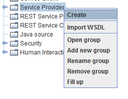
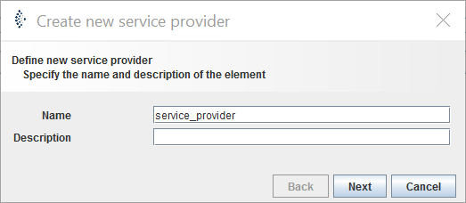
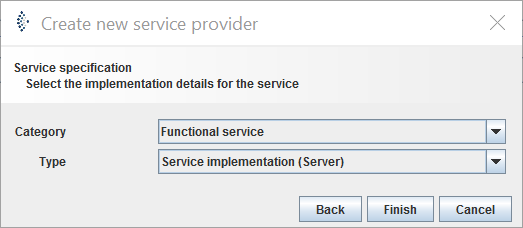

Service Provider

Topic content
Concept
In Orchestra, you have the possibility to place a web service available for the external use. A Service-Provider implements a service interface by each operation which is mapped with a technical Orchestra component. The individual service operations will be mapped with specific technical Orchestra components such as channel, process models or mappings.
Service Provider Context Menu
In the ares of Service Provider of the Scenario Elements, all service providers which belong to this scenario can be found. You can open a menu by a right click on the element as below figure. In this menu, you have to possibility to create a new service provider or new documentation and to group the service provider elements within the tree structure. If you have a right click on an existing service provider, you will additionally have the possibility to open service provider, to edit or delete the properties of the element.
Create a web service provider
To add a web service provider in Orchestra:
1. Open the context menu by right-clicking on Service Provider and click [Create].

2. Specify a name and a description (if applicable) for your new service provider and click [next]

3. Choose the category and type of service provider to create from the list.
Category :
Functional service: The functionality of the web service is defined by mapping on scenario element (for example, call of a channel)
Process service: The functionality of the web service is defined by a process model (for more complex interaction pattern)
Type:
Service implementation (Server) = Implement a web service (Request/Response pattern); Normal case
Service subscriber (Client) = Implement a Callback-Interface; rarely used.

4. Finally, click on [finish] to create your service provider.